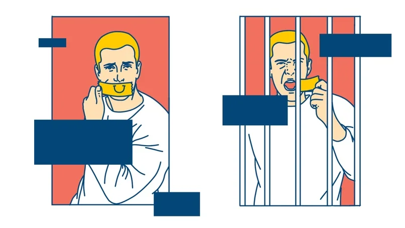
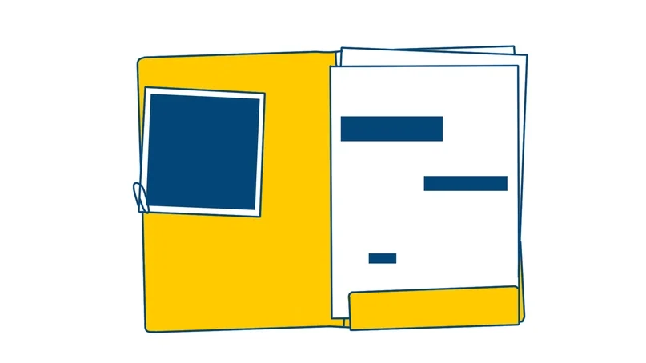

Александр Сорге — о реальном весе слова и о том, почему его свободе нет места в России. Пока что.
Пиздеть, как известно, — не мешки ворочать. Особенно сегодня, когда наши извилины ежесекундно омываются теплыми волнами беспроводного интернета. Достаточно лишь нажать на пару виртуальных клавиш, и ваше ценнейшее мнение разлетится по всей земле, создавая рябь на поверхности мирового инфоокеана. В особо прогрессивных странах вас даже не будут бить за это камнями и сжигать на костре! Этим-то мы и пользуемся, каждый день изрыгая свои мысли в соцсети и мессенджеры.
Слов стало слишком много, отчего они просто обесценились. Мы стали проще относиться к тому, что вылетает как из нашего, так и из чужого рта: стендапы становятся фривольнее, новости лживее, а обещания ненадежнее.
Словоблудие и медиапроституция блогеров уже не вызывают ни удивления, ни возмущения, ведь «это просто слова». Подчас эти самые слова становятся легче воздуха, ведь от них остается лишь пустая оболочка: для некоторых признаться в любви или дать обет — все равно что выкурить сигарету. И вроде бы такая инфляция слова — процесс печальный, однако, как говорится, «поверьте, здесь не все так однозначно».
Всю историю государства российского по праву можно считать историей становления цензуры: первый список запрещенных книг — «Изборник 1073 года» — появился за 100 лет до первого русского литературного памятника — «Слова о полку Игореве». С тех пор тебя нельзя было назвать четким самодержцем, если ты не внес свою лепту в славное дело цензуры.
Петр Великий разделил ее на духовную и светскую, при Екатерине II ревизия литературы стала не только предварительной, но и централизованной. Это почти уничтожило всех провинциальных издателей, ведь книжицы отныне надобно было обязательно отправлять либо в Петербургский, либо в Московский комитеты. Ну а Павел I провел реформы, которые окончательно придали цензурному ведомству облик «своеобразной машины, продуманной до деталей».
В Великобритании, для сравнения, примерно в это же время (1792 год) был принят «Акт Фокса», с которого начался плавный демонтаж цензуры в печати. Как говаривал классик, «что нужно Лондону, то рано для Москвы». Если война с Турцией всегда считалась признаком здоровой внешней политики Российской Империи, то война с вольнодумством — политики внутренней.
После короткого перерыва на октябрьский краснознаменный кутеж все вернулось на круги своя. Сразу после прихода к власти большевики издали декрет «О печати», который запретил всю гнилую «буржуазную прессу». А в 1922 году возник Главлит, который почти 80 лет разливал одну единственную «Правду» по ГОСТу и определял, что печатать можно, а что нельзя. Борьба с вольнодумством переросла в борьбу с инакомыслием, ведь отныне существовало лишь два мнения: официальное и наказуемое.
Вся эта многовековая запретительная канитель, а также обилие ведомств полиции мыслей, от цепных сотрудников которых можно было получить по зубам не только за дерзкий памфлет, но и за идеологически неверный анекдот, привели к тому, что у человека, родившегося на самом лучшем куске земли «от тайги до британских морей», формировалось совершенно особенное отношение к слову. Слова у нас увесисты, как брусок булатной стали, из них мастера литературного ремесла льют свои монументальные памятники. Слишком уж долго они облагались тяжелой барщиной, отчего стали дорогим ресурсом: за них часто платили свободой, а иногда и кровью.

Золото для нас совсем не молчание, а именно слова. И раз уж ты расходуешь это золото, то отвешиваешь его ровно столько, сколько нужно, прекрасно осознавая цену каждого лишнего грамма. Думать можно все что угодно, но если ты решил облечь свои мысли в плоть текста или фразы, значит, на то есть важная необходимость, и в каждое слово ты вкладываешь строго определенный смысл. Причем неважно, где эти слова произносятся: на трибуне или на прокуренной кухне. Оттого литераторы подчас нам кажутся святыми, чьи имена если и произносят, то только с благоговейным придыханием.
Власть имущие, естественно, не в счет: они всегда обладали монополией не только на единственно верную трактовку событий, но и на поставки золотоносной руды, которой они щедро осыпали головы подданных, даже если в ней не было ни крупицы правды. Правда, и цена госруды всегда была не выше гроша. При этом власть всегда чувствовала реальный вес слова, вернее, вес реального слова, поэтому всегда так боялась лишиться своей монополии. Оттого-то создала целый пантеон серебряных поэтов-мучеников, оттого выдавливала Довлатовых с Бродскими, оттого и ссылала Солженицыных с Сахаровыми. Поэтому принимает все эти абсурдные законы об оскорблении царского величия.
Ведь, казалось бы, ты серьезный дядя с тремя подбородками, гаремом эскортниц и бюджетным «майбахом» — какое тебе дело до того, что простолюдины там внизу говорят? Но дяде до этого есть дело, ибо дядя прекрасно понимает: если кинет какой-нибудь бесноватый писака свою литературную оглоблю в народ, так народ эту тяжеленную оглоблю подымет да и к стенам белокаменным пойдет.
За русское слово даже сегодня можно получить кулаком в дышло, пером в бочину или и вовсе сесть на казенную бутылку. Поэтому и обращаться с таким тяжелым предметом приходится аккуратно. Нам порою кажется, что каждый, аки Доктор Стрендж, может словом менять вокруг себя реальность, а древнеиудейское заклинание avda kedavra — «что сказано, должно быть сделано» — и впрямь работает. Оттого базар, как и руду, нужно тщательно фильтровать: острая шутка вполне может быть приравнена к колюще-режущему. Лишних же слов на ветер бросать никак нельзя, поэтому-то «счастье любит тишину», а о сокровенных мечтах говорить не стоит — не сбудутся.
Да, времена меняются, меняется и курс слова. Но вседозволенность западных скоморохов, для которых слова — это просто слова, у многих до сих пор вызывает возмущение: ведь есть вещи, над которыми смеяться совсем нельзя, и темы, на которые не шутят. Рэп-баттлы часто воспринимаются как прелюдия к поножовщине, и многие искренне не могут понять, почему артисты на самом деле не кровные враги и после баттла обмениваются рукопожатием и едут домой кушать чебупели, а не бьют друг другу лица.
При этом все так плачут по свободе слова, которую якобы хоронят чиновники и силовики, не замечая, что лопаты-то не в руках аппаратчиков, а в наших собственных. Свобода слова рождается не на страницах законов, биллей и конституций, она рождается в голове — это сила говорить даже тогда, когда за сказанное придется заплатить высокую цену. Только вот высокой цену подчас делают не цензура, не псы государевы и не крысы-стукачи. Цену мы устанавливаем сами, когда вдруг начинаем наделять обычные слова магическими свойствами, насмерть биться из-за них и делать тяжелее чушки чугуна. Какой смысл орать про свободу слова в стране, где за это самое слово могут спросить, а то и отвесить живительных тумаков?

Хотим ли мы, нравится ли нам это, но подлинная свобода слова подразумевает под собой его инфляцию, его обесценивание и «олегчание».
Да, эта монета имеет две стороны, но мы обязаны расплатиться ею. Полновесным слово было не только в России: глупо полагать, что в просвещенной Европе XVII-XVIII веков все было иначе и сладкие вольные речи мог лить любой соловей. Российские цензурные законы являлись, по сути, калькой с французских, прусских и австрийских. А в Англии за поношение величия и слишком уж большую словоохотливость вполне можно было лишиться ушей или языка. В середине XIX века во Франции, когда пресса упивалась своей вольностью, в стране началась эпидемия «журналистских дуэлей» — за лживую статью от коллеги можно было схватить не дисс, а пулю. Даже в Америке, где цензуры как института не существовало вовсе, дуэли из-за неосторожно брошенной фразы были не редкостью: стрелялись даже секретарь казначейства Александр Гамильтон и вице-президент Аарон Берр.
Но два века, пока люди дышали свободой, принесли трезвость, осознание того, что даже острая фраза может задеть лишь твое самолюбие и неравнозначна физической пощечине или плевку в лицо. И что против слова нужно выставлять лишь слово, в крайнем случае, слово судьи, а не кулак, заточку или шпагу. Билли же лишь закрепили не только право говорить, но и обязанность слушать, не доставая мушкет.